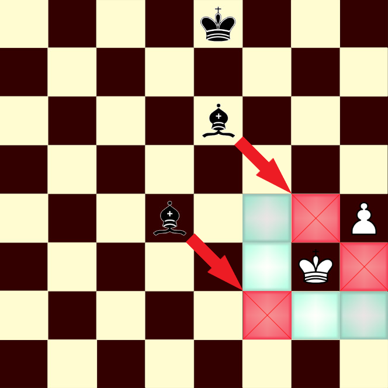

หมากรุกสากล
King
เป็นตัวหมากรูปมงกุฎประดับด้วยกางเขนด้านบน มีความสำคัญที่สุด แต่ก็อ่อนแอมากสำหรับหมากรุกสากล สามารถทำการเข้าป้อม(Castling) กับ Rook ได้ มีเพียงตัวเดียวตลอดทั้งเกม กติกาการเดิน King มีดังนี้
เดินได้ในทุกทิศทางรอบตัวทั้ง 8 จัตุรัส สามารถกินหมากในจัตุรัสที่เดินได้
ตำแหน่งการเดิน
ไม่สามารถเดินไปยังตากินของฝ่ายตรงข้ามได้ ซึ่งหากไม่สามารถเดินหมากตัวอื่นได้ด้วยจะถือว่า Stalemate และเกมจะจบลงโดยถือว่าเสมอกัน

จัตุรัสที่ไม่สามารถเดินได้
Stalemate
เมื่อ King ถูกเล็งกิน(Check) จะต้องแก้ไขก่อนเสมอ โดยการเดินหนี, เดินหมากอื่นมาป้องกัน หรือกินหมากที่เล็งกินอยู่ หากไม่สามารถแก้ไขการ Check ได้จะถือว่า Checkmate และเกมจะจบลงโดยฝ่ายที่ถูก Checkmate เป็นฝ่ายแพ้
แก้ไขการถูก Check
Checkmate